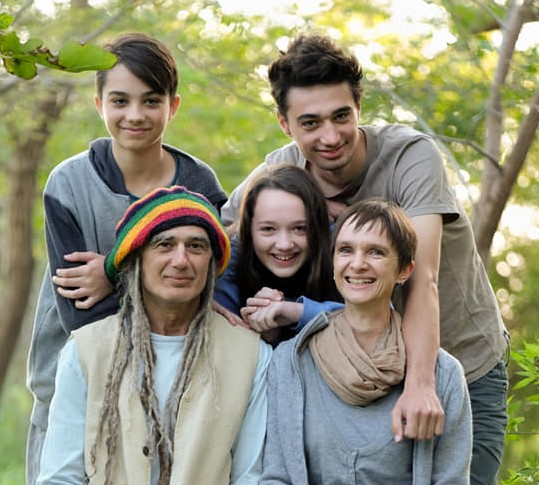

At Kibbutz Harel after weeks of being transient most of the members of the kibbutz have returned to their homes but 10 families still don’t know when the rebuilding of their destroyed and damaged homes will begin.
Apart from the five families who lost their homes and all of their belongings, the homes of another 5 families were seriously damaged. Blackened houses, air conditioners and decks, whole gardens were destroyed or dried up, warehouses with equipment, bicycles were destroyed... and if that was not enough, a series of burglaries in some houses that were empty during the evacuation of the residents.
The Sheridan’s are one of the families unable to return to their home. The fire damaged one exterior wall of their house, entering the house through the sewer and destroying the utilities room, sending smoke into the house leaving the whole interior of the house covered with a deep layer of black soot. Electrical appliances (washing machine, refrigerator, dish washer, air conditioners and the oven) furniture and personal belongings are so black that cleaning and repairing them are out of the question. Their house is still repairable but the timetable for returning to their home is close to six months.
Harel has received great support from the Mateh Yehuda Municipality, from the council's head, Yaniv Wiesel and his staff, from social and psychological teams who come to support and maintain the children and the families. Harel’s community members have revealed an amazing inner leadership that works hand in hand with the management of the kibbutz.
It has been wonderful and exciting to see the mobilization of nearby settlements and all the aid that they have given to Harel. Donations of clothing and equipment have been received from Israelis across the country.
How can you help!
Most of the residents have returned to their homes but Harel is determined to bring all the families back as soon as we can.
In order to achieve this goal Harel decided to buy 10 temporary homes so that the families who are homeless can return to the kibbutz. Within the coming month the homes will be delivered to Harel and then connected to the infrastructure.
The price of 10 temporary homes, transportation and connecting to the infrastructure is $1,400,000. We need your help to cover these costs, help us bring all the families home.
Donations can be made through:
PEF The Israel Endowments Fund. Inc
630 Third Ave, Ste 1501
New York NY 10017 USA
